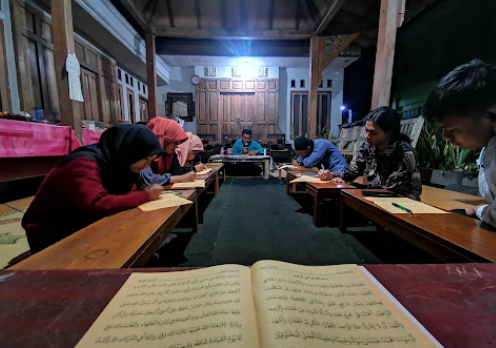

Bangunjiwa mendampingi mahasantri menempuh pendidikan keislaman sambil kuliah, sekaligus membina mereka menjadi tenaga IT, pemetaan, dan pengelola SDM survei yang siap mengoperasikan ekosistem MRV Nexus di lapangan.

Tentang Kami
Pondok Pesantren Riset Ekologi Bangunjiwa berawal sebagai Pesantren Mahasiswa yang menaungi mahasantri untuk menyeimbangkan keilmuan duniawi dan ukhrowi. Kini, Bangunjiwa berkembang menjadi pusat pendidikan yang juga mencetak sumber daya manusia untuk mengelola ekosistem riset ekologi MRV Nexus.
Di sini, mahasantri tidak hanya belajar tahsin, tahfidz, dan kitab kuning, tetapi juga dibina menguasai IT, pemetaan (GIS), dan pengelolaan SDM survei — sambil tetap menjalankan peran mereka sebagai mahasiswa aktif di kampus masing-masing.
Bangunjiwa menjadi jembatan bagi mahasantri untuk melaksanakan pengabdian masyarakat secara nyata: turun ke DAS dan kawasan hutan sosial sebagai enumerator, pengelola data, dan pemetaan bersama MRV Nexus, menerapkan semangat ta'awanu 'ala al-birri wat taqwa dalam kehidupan sehari-hari.
Visi
Menyelenggarakan kegiatan pembelajaran yang berbasis sosial kemasyarakatan untuk menghasilkan santri yang cerdas, mandiri, serta menguasai ilmu pengetahuan dan teknologi.
Membina dan mengembangkan pendidikan pesantren dalam arti seluas-luasnya dengan semangat ta'awanu 'ala al-birri wat taqwa serta menerapkan konsep amar ma'ruf nahi munkar.
Menerapkan kurikulum pembelajaran yang disesuaikan dengan kebutuhan riset ekologi, pemetaan, dan pengabdian masyarakat berbasis data.
Meningkatkan kualitas pendidik maupun tenaga kependidikan agar lembaga semakin berkualitas dan profesional.
Membina santri dalam bidang IT dan pengelolaan data agar mampu membangun serta merawat infrastruktur digital MRV Nexus.
Menyiapkan tenaga pemetaan (GIS) dan enumerator lapangan yang cakap melakukan survei ekologi di DAS dan kawasan hutan sosial.
Program Riset Ekologi
Selain pendidikan keislaman, mahasantri Bangunjiwa dibina lintas tiga bidang agar siap terjun langsung mengelola MRV Nexus — platform monitoring, reporting, dan verification untuk DAS dan hutan sosial.
Mahasantri dibina mengelola infrastruktur digital, basis data, dan sistem pelaporan yang menjadi tulang punggung platform MRV Nexus, dari pengembangan web hingga pemeliharaan data lapangan.
Pelatihan pemetaan (GIS) dan penginderaan jauh dipadukan dengan teknik survei langsung, agar mahasantri mampu memetakan kondisi DAS dan kawasan hutan sosial secara akurat.
Mahasantri dilatih mengoordinasikan tim enumerator, merancang pendataan partisipatif, dan mendampingi masyarakat selama proses asesmen lapangan berlangsung.
Kurikulum
Disusun bertahap dari semester I hingga V, memadukan penguasaan Al-Qur'an, ilmu alat, dan fikih dengan peminatan riset ekologi serta pengabdian masyarakat di akhir masa belajar.
| Mata Pelajaran | Sem I | Sem II | Sem III | Sem IV | Sem V | Kitab |
|---|---|---|---|---|---|---|
| Tahsin | ✓ | ✓ | ✓ | ✓ | Al-Qur'an | |
| Tahfidz | ✓ | ✓ | ✓ | ✓ | Al-Qur'an | |
| Nahwu | ✓ | Modul | ||||
| Shorof | ✓ | Modul | ||||
| Tajwid | ✓ | Modul | ||||
| Akidah | ✓ | Aqidatul Awwam | ||||
| Akhlak | ✓ | Adabul 'Alim wal Muta'allim | ||||
| Ushul Fiqh | ✓ | Matan Waroqot | ||||
| Fikih | ✓ | Matnul Ghoyatu wat Taqrib | ||||
| Hadits | ✓ | Arba'in Nawawi | ||||
| Tasawwuf | ✓ | Bidayatul Hidayah | ||||
| Qiroatul Kutub | ✓ | Modul | ||||
| Pengabdian Masyarakat | ✓ | — |
Ditetapkan oleh Direktur Pendidikan PPM Bangunjiwa, M. Hamid Lufafi, S.Pd.
Peminatan Riset Ekologi — Semester IV & V
Pengelolaan basis data & sistem pelaporan MRV Nexus
Dasar GIS & pemetaan DAS / hutan sosial
Teknik enumerator & pendataan partisipatif
Koordinasi tim lapangan & pendampingan warga
Ekosistem Terintegrasi
Bangunjiwa mencetak SDM, MRV Nexus mengoperasikan data lapangan, dan donasi publik mendanai keberlangsungan keduanya.
Simpul 1
Mencetak mahasantri yang cakap IT, pemetaan, dan pengelolaan SDM survei, siap terjun ke lapangan maupun mengelola sistem digital.
Lihat program riset →Simpul 2
Sistem monitoring, reporting, dan verification untuk DAS Oyo, DAS Ulin, dan kawasan hutan sosial lain, dijalankan oleh alumni dan mahasantri Bangunjiwa.
Platform MRV NexusSimpul 3
Pendanaan publik untuk membiayai kunjungan lapangan, pengolahan data, dan pelatihan SDM Bangunjiwa yang terjun di MRV Nexus.
Lihat halaman donasi →Kegiatan & Fasilitas
Dari kajian malam, tahsin bersama, hingga ruang tinggal yang nyaman untuk belajar dan beristirahat.